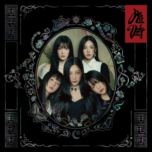

Favorites
Here is a list of my favorite title tracks from Red Velvet's discography, each song from their respective albums. Their latest comeback from their 3rd-full length album has been included in this list, which was released on the 23rd of November 2023. The title track being "Chill Kill.
Rookie from Rookie Album

Rookie Album Songs:
- 1. Rookie
- 2. Little Little
- 3. Happily Ever After
- 4. Talk to Me
- 5. Body Talk
- 6. Last Love
Bad Boy from The Perfect Red Velvet Album

Bad Boy Album Songs:
- 1. Bad Boy
- 2. All Right
- 3. Peek-A-Boo
- 4. Look
- 5. I Just
- 6. Kingdom Come
- 7. Time To Love
- 8. My Second Date
- 9. Attaboy
- 10. Perfect 10
- 11. About Love
- 12. Moonlight Melody
Power Up from Summer Magic Album

Summer Magic Album Songs:
- 1. Power Up
- 2. With You
- 3. Mr.E
- 4. Mosquito
- 5. Hit That Drum
- 6. Blue Lemonade
- 7. Bad Boy (English Ver.)
Really Bad Bad Boy from RBB Album

RBB Album Songs:
- 1. RBB
- 2. Butterflies
- 3. So Good
- 4. Sassy Me
- 5. Taste
- 6. RBB (English Ver.)
Psycho from The ReVe Festival: Finale Album

The ReVe Festival: Finale Album Songs:
- 1. Psycho
- 2. In & Out
- 3. Remember Forever
- 4. Eyes Locked, Hands Locked
- 5. Ladies Night
- 6. Jumpin'
- 7. Love Is The Way
- 8. Carpool
- 9. Umpah Umpah
- 10. LP
- 11. Parade
- 12. Bing Bing
- 13. Milkshake
- 14. Sunny Side Up!
- 15. Zimzalabim
- 16. La Rouge
Chill Kill from Chill Kill Album
Chill Kill Album Songs:
- 1. Chill Kill
- 2. Knock Knock (Who's There?)
- 3. Underwater
- 4. Will I Ever See You Again?
- 5. Nightmare
- 6. Iced Coffee
- 7. One Kiss
- 8. Bulldozer
- 9. Wings
- 10. Scenery